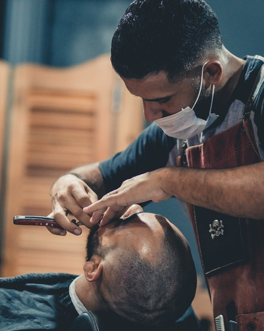

My Story
My story is a simple one. It all started in my fathers barber shop, I would spend my evenings there after school sitting around watching him cut hair and have a great time doing it. It was like he was friends with everyone who sat in his chair and the vibe in the shop was always positive no matter the topic.
I started out by sweeping up the hair on the floor and helping in any way I could but as tme went on I realised that maybe this is what I was meant to do. I loved the atmosphere, the happy feel of the place and the friendship that came from a haircut and the conversations had in that time. So I decided I would follow in my fathers footsteps!
